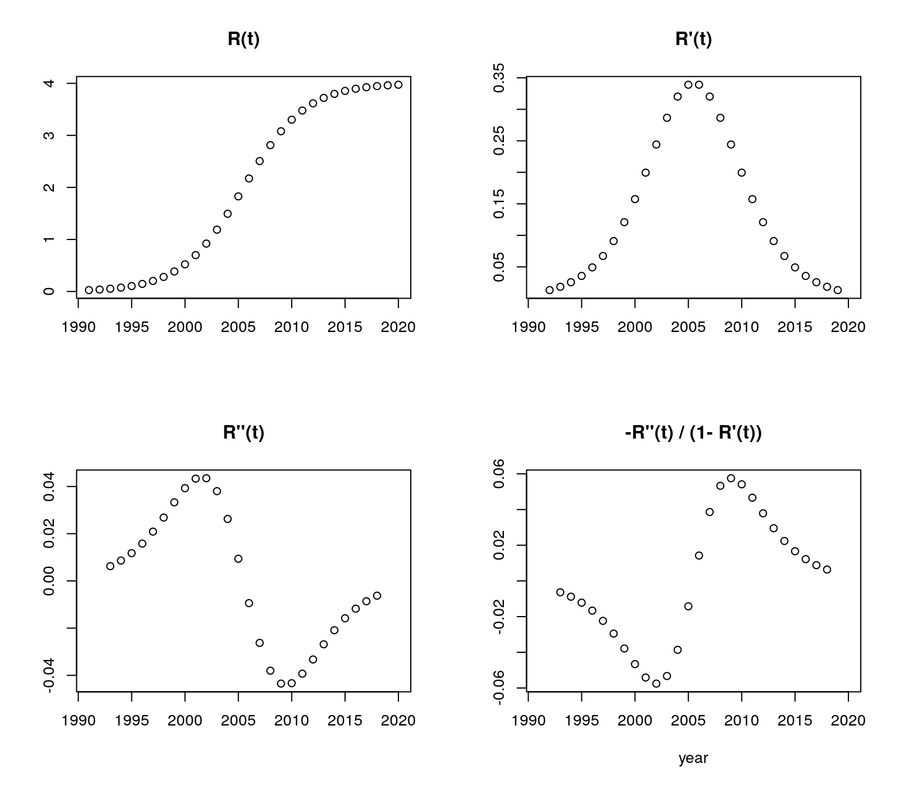
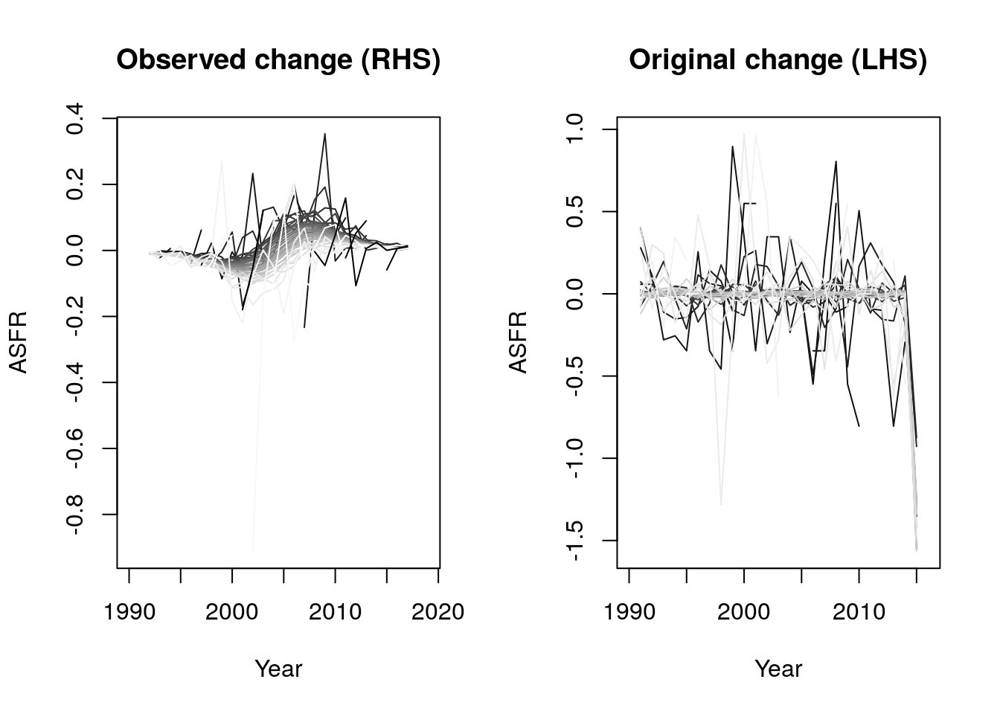
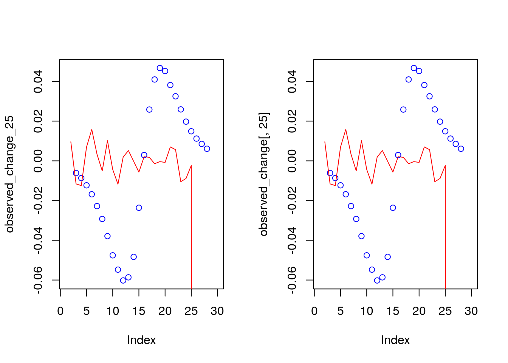

Chapter 4 Problem set 6
4.1 Questions
- Using the tempo_simu.R file,
- Try with N of 4 million – does it still work? What happens?
- Try with a shift function that goes up and down. Are the adjusted counts ever LESS than the observed counts? If so, when?
- If the cumulative shift was Rt = a + 0.1*t, what would be a formula for tempo-adjusted counts of births? Sketch the 4 panels without the computer and then check to see if you’re right.
- Calculate the age profile of fertility change predicted by the BongaartsFeeney model by taking time derivatives of the log schedules. You will end up with three terms. Describe each of these in words.
- Use simulation based on tempo simu.R to check your answer.
- Is there a diagnostic plot that you could do to compare observed agespecific changes to those predicted by the BF model? Hint: use normalized schedules that sum to 1.0
- Use this diagnostic plot to all-order fertility change during the Great Recession.
- Use this diagnostic plot to 1st, 2nd, and 3rd births.
- Fit the two-part normal mixture model to fertility from another country based on what looks interesting in the Burkimsher paper. (E.g., Canada, Portugal, or the Netherlands). I recommend doing this for 1 year, but once you get your code running, you could iterate over years. Use graphs to discuss the goodness of fit. And if you do more than 1 year, discuss whether the time trends in the parameters make substantive sense)
4.2 Solutions
- Using the tempo_simu.R file,
- Try with N of 4 million – does it still work? What happens?
This simulation will first sample from a normal distribution draws of ages that represent the ages of women when giving birth for the first time. It also creates as shift function \(R(t)\) which affects all women of a given year.

 Yes, it still works. In fact, we see that the adjusted births are very close to the observed births when using this number of simulations. (I continue to use an N of 4 million for the rest of this problem).
Yes, it still works. In fact, we see that the adjusted births are very close to the observed births when using this number of simulations. (I continue to use an N of 4 million for the rest of this problem).
- Try with a shift function that goes up and down. Are the adjusted counts ever LESS than the observed counts? If so, when?

 The adjusted counts are not always less than the observed. Naturally, this only happens when we have spikes on the observed counts that become smoother after the adjusting of the birth counts.
The adjusted counts are not always less than the observed. Naturally, this only happens when we have spikes on the observed counts that become smoother after the adjusting of the birth counts.
- If the cumulative shift was Rt = a + 0.1*t, what would be a formula for tempo-adjusted counts of births? Sketch the 4 panels without the computer and then check to see if you’re right.
Let \(a = -199\), so we get a shift of 0 to about 3 years depending on the time period:

- Try with N of 4 million – does it still work? What happens?
This simulation will first sample from a normal distribution draws of ages that represent the ages of women when giving birth for the first time. It also creates as shift function \(R(t)\) which affects all women of a given year.
- Calculate the age profile of fertility change predicted by the BongaartsFeeney model by taking time derivatives of the log schedules. You will end up with three terms. Describe each of these in words.
\[\begin{aligned} f(a,t)&=f_0(a-R(t))[1-R'(t)]q(t)\\ log(f(a,t))&=log(f_0(a-R(t))) + log(1-R'(t)) + log(q(t))\\ \frac{\partial log(f(a,t))}{\partial t}&=\frac{\partial log(f_0(a-R(t)))}{\partial t} + \frac{\partial log(1-R'(t))}{\partial t} + \frac{\partial log(q(t))}{\partial t}\\ \frac{\partial log(f(a,t))}{\partial t}&=-R'(t)\frac{f_0'(a-R(t))}{f_0(a-R(t))} -\frac{R''(t)}{1-R'(t)} + \frac{q'(t)}{q(t)} \end{aligned}\] The first term represents the proportional change in the fertility of the equivalent pre-postponement cohort. In particular, it is divided into (how far someone shifts ‘over’ relative to ages on the baseline fertility schedule) and an \(R'(t)\) term (how much one shifts ‘up’). The second term represents the proportional change in the rate of change in years of postponement; it is a tempo-effect. The third term represents the proportional change in quantum. Use simulation based on tempo simu.R to check your answer.
Thetempo_simu.Rfunction computes \(R(t)\) but we need to obtain the remaining components of the answer from the previous excercise. For simplicity, let’s assume that there are no tempo effects (\(q(t)=0\)) and that \(a=25\), that is, our baseline schedule is that of women aged 25.- \(R(t)\) components:
Let’s briefly look at \(R(t)\), \(R'(t)\), and \(R''(t)\). In
tempo_simu.R\(R(t)\) refers to the cumulative shift object (shift.t). We can obtain the derivatives by taking the centered difference of this object.
shift.t.prime <- center.diff(shift.t) shift.t.prime.2 <- center.diff(shift.t.prime) par(mfrow = c(2,2)) plot(1991:2020, shift.t, main = 'R(t)', xlab = '', ylab = '') plot(1991:2020, shift.t.prime, main = 'R\'(t)', xlab = '', ylab = '') plot(1991:2020, shift.t.prime.2, main = 'R\'\'(t)', xlab = '', ylab = '') plot(1991:2020,-shift.t.prime.2/ (1-shift.t.prime), main = '-R\'\'(t) / (1- R\'(t))', xlab = 'year', ylab = '')
- \(f_0(a-R(t))\) function: In the Bongaarts and Feeney model, the baseline schedule of women of age \(a\) at time \(t\) is \(f_0(a-R(t))\). That is, it is the fertility schedule that is observed because of the shift. From the simulation, we obtain a table of births at each age and the age-specific fertility rates. Then, we can look at the original and the observed ASFRs. The original ASFR is that from the simulation, which we would not observe. Rather we would only the see the ASFR from births that were postponed by year-specific shifts.
 The component that we are interersted in is the first derivative of the baseline schedule (\(f_0(a-R(t))\)).# floor everything dt_floored <- dt %>% transmute('x' = floor(x), 't' = floor(t), 't.obs' = floor(t.obs), 'x.obs' = floor(x.obs)) # the .obs values are the ones that go into the baseline function. # Births to women born at each age. original_sched <- table(dt_floored$x, dt_floored$t) observed_sched <- table(dt_floored$x.obs, dt_floored$t.obs) # ASFR (The denominator is 100 person years lived, or 100 women at each age) asfr_original<- original_sched/(100*thousand) #f(a,t) asfr_observed <- observed_sched/(100*thousand) #f_0(a,t) #Graph of ASFRs for observed and original births. The lines get lighter with each year. par(mfrow=c(2,1)) matplot(rownames(asfr_observed), asfr_observed, type = "l", lty = 1, col=grey(seq(0, 1, length = 40)), xlab = 'Age', ylab = 'ASFR', main = 'Observed ASFR') abline(v= 25, lty = 2, col = 'black') matplot(rownames(asfr_original), asfr_original, type = "l", lty = 1, col=grey(seq(0, 1, length = 40)), xlab = 'Age', ylab = 'ASFR', main = 'Original ASFR') abline(v= 25, lty = 2, col = 'black')
- Comparison of terms from original and observed data:
We can merge all the terms of the formula from the previous question and compare it to the derivative of the log version of the observed fertility schedules.


## 5 6 7 8 9 10 11 ## NaN NaN NaN NaN Inf NaN 0.0279104400 ## 12 13 14 15 16 17 18 ## 0.0284926376 0.0264610984 0.0237212086 0.0217063493 0.0201999478 0.0180307054 0.0163718360 ## 19 20 21 22 23 24 25 ## 0.0143367711 0.0126676950 0.0108740251 0.0089406636 0.0070038016 0.0051380233 0.0032746533 ## 26 27 28 29 30 31 32 ## 0.0013796601 -0.0004524888 -0.0022009709 -0.0041665665 -0.0059568771 -0.0079508464 -0.0098116081 ## 33 34 35 36 37 38 39 ## -0.0116493883 -0.0134483969 -0.0152374780 -0.0174666475 -0.0187958955 -0.0213274275 -0.0225088932 ## 40 41 42 43 44 45 46 ## -0.0246023349 -0.0284561023 -0.0218511609 NaN NaN NaN NaN ## 47 48 ## NaN NaN## 5 6 7 8 9 10 11 12 13 ## NaN NaN NaN -Inf -0.04661512 -0.03769700 -0.02995997 -0.06192639 -0.05078215 ## 14 15 16 17 18 19 20 21 22 ## -0.04858363 -0.05152016 -0.05218837 -0.05159206 -0.05148395 -0.05160988 -0.05209997 -0.05204756 -0.05258484 ## 23 24 25 26 27 28 29 30 31 ## -0.05193104 -0.05309911 -0.05345465 -0.05218494 -0.05232512 -0.05222811 -0.05151393 -0.05223201 -0.05259580 ## 32 33 34 35 36 37 38 39 40 ## -0.05334486 -0.05261664 -0.05131790 -0.04743019 -0.05145224 -0.06105139 -0.06151550 -0.04560559 -Inf ## 41 42 43 44 45 ## -Inf NaN NaN NaN NaN
- \(R(t)\) components:
Let’s briefly look at \(R(t)\), \(R'(t)\), and \(R''(t)\). In